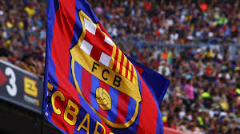

LE FC Barcelone, fondé en 1899 par un
groupe de footballeurs menés par le Suisse Joan Gamper, est l’un des clubs les plus emblématiques du
monde.
Dès ses débuts, le club s’est distingué par son identité catalane forte et sa devise devenue célèbre
"Més que un club" ("Plus qu’un club").
Tout au long du XXe siècle, le Barça a connu de grands succès nationaux et internationaux, notamment
grâce à des générations dorées de joueurs comme Johan Cruyff, qui marqua le club à la fois comme
joueur
et comme entraîneur avec son style de jeu offensif et basé sur la possession.
Sous l’ère de Pep Guardiola (2008–2012), le FC Barcelone a atteint son apogée, remportant de
nombreux
titres,
dont plusieurs Ligues des champions, et pratiquant un football spectaculaire porté par Lionel Messi,
Xavi et Iniesta. Aujourd’hui encore, le Barça reste un symbole de passion, d’excellence et
d’identité
culturelle.